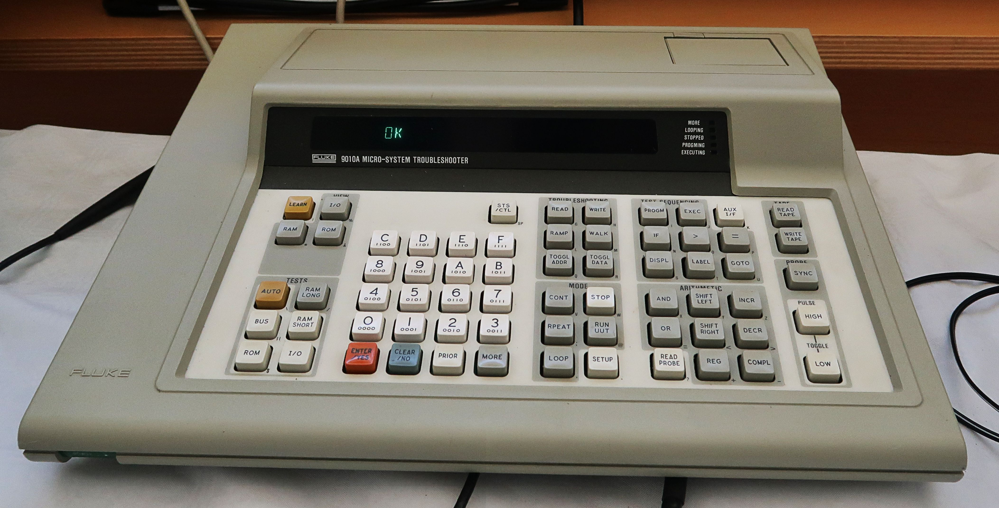

Fluke 9010A Micro-System Troubleshooter
The repair tool you plug into a dead computer's brain socket

Overview
The Fluke 9010A Micro-System Troubleshooter, announced in 1983 (Operator Manual Rev 2 dated April 1984), is a portable service instrument built to debug microprocessor boards down to the silicon. The front panel is a calculator-style instrument: a 16-key hexadecimal keypad, labeled function keys (LEARN, VIEW, BUS TEST, ROM TEST, I/O TEST, RAM SHORT, RAM LONG, RAMP, READ/WRITE, RUN-UUT), a 32-character alphanumeric display, and a built-in minicassette drive for test programs. Its purpose was to diagnose broken computer boards without schematics — you told it what CPU the board used, and it talked to that CPU's bus directly.
The interaction model is the point. To use it you power the board down, lever the microprocessor out of its socket with an IC puller, and plug a pod into the now-empty socket. The pod contains a copy of that CPU plus RAM, ROM, and I/O; the 9010A physically becomes the target processor and drives the board's address, data, and control lines through the socket. You are swapping your instrument into the patient's brain socket. A handheld probe with red and green indicator lights inside its shell reads logic levels at any node, injects bus-synchronized pulses, and gathers signatures while the instrument runs test patterns.
The 9010A became the definitive arcade repairman's tool: in-circuit debugging of Pac-Man, Ms. Pac-Man, Tempest, Centipede, and Defender PCBs. LEARN, run against a known-good board, auto-builds a memory map; ROM TEST computes a proprietary mathematical signature that the operator must look up in reference tables by hand. The instrument's prompts, defaults, audible feedback, and consistent OK/FAIL messages were designed so a bench tech with no programming background could script board tests. Today it has a 90-page collector thread (the "Fluke 9010a Club") and lives on in emulators, keeping the ritual alive.
Deep dive
The 9010A's defining move: pull the suspect microprocessor, plug in the pod. The pod carries its own copy of the CPU and drives the board's bus in place of the removed chip. The instrument becomes the computer — it can read and write RAM, test ROM against stored signatures, exercise I/O ports, and watch the bus respond. US Patent 4,709,366 ("Computer Assisted Fault Isolation in Circuit Board Testing", Marshall H. Scott) describes exactly this: "the microprocessor is electrically replaced with a special interface pod which is connected to a troubleshooting device."
The handheld stimulus/response probe has a tip, a button, and red/green indicator lights inside the shell that read logic levels at the node, holding the state at least 0.25 s so the eye can catch brief pulses. It injects bus-synchronized HIGH/LOW stimulus pulses, counts events, reads nodes during memory cycles, and gathers signatures at any node while RAMP or a loop runs. A rear-panel BNC connector outputs a scope trigger synced to the UUT bus cycles. The probe is not passive — US Patent 5,043,655 ("Current Sensing Buffer for Digital Signal Line Testing", Gerald J. McMorrow) describes its active sampling during address and data phases.
ROM TEST computes a proprietary mathematical "signature" for the contents of a ROM — explicitly not a CRC — which the operator must know in advance from reference tables. Arcade technicians built libraries of expected signatures per game and ROM revision, and traded them like baseball cards. QuarterArcade's Coin-Op TechNet hosted a signature calculator utility; the modern FlukeEm emulator and the community FIDE (Fluke Integrated Development Environment) keep the ecosystem alive.
The 9010A's cultural home is the arcade. When an arcade cabinet's PCB went dark, the 9010A with the right pod and probe found the dead chip. Today the machine is central to arcade restoration: reproduction pods (Marian Z80/6502/6800), signature databases, and the 90-page "Fluke 9010a Club" thread on the International Arcade Museum forums.
Team & pioneers
- John Fluke Mfg. Co., Inc. Everett, Washington test-and-measurement maker; produced the 9000A-series Troubleshooters from the early 1980s.
- Marshall H. Scott Engineer; US Patent 4,709,366 on the pod-based fault isolation method.
- Gerald J. McMorrow Engineer; US Patent 5,043,655 on the probe's current-sensing buffer.
Media
Sources
- Fluke 9010A Operator Manual, Rev 2 (April 1984) — archive.org
- Centre for Computing History — Fluke 9010A object record
- QuarterArcade Coin-Op TechNet — Fluke 9010A (Wayback Machine)
- International Arcade Museum forums — "The Fluke 9010a Club" thread
- US Patent 4,709,366 — Computer Assisted Fault Isolation in Circuit Board Testing
- US Patent 5,043,655 — Current Sensing Buffer for Digital Signal Line Testing